8 UpSet plot#
UpSet plots provide an
efficient way to visualize intersections across multiple sets compared
to traditional approaches such as Venn diagrams, especially when there
are more than three sets. Originally popularized in R by UpSetR, UpSet plots are
implemented directly in ComplexHeatmap-py on top of the
Heatmap and HeatmapAnnotation architecture,
enabling full customization, arbitrary annotations, concatenation, and
genomic interval support.
8.1 Input data#
Multiple sets can be passed to ComplexHeatmap-py in three formats:
- A dictionary (or sequence) of sets, where each value is an iterable of element identifiers:
import complexheatmap as ch
import numpy as np
import pandas as pd
from complexheatmap import v
lt = {
"set1": ["a", "b", "c"],
"set2": ["b", "c", "d", "e"],
}- A binary matrix or
pandas.DataFramewhere rows correspond to elements and columns correspond to sets (1/0or booleanTrue/False). You can convert a dictionary of sets to a binaryDataFramewithch.list_to_matrix():
lt = {"set1": ["a", "b", "c"], "set2": ["b", "c", "d", "e"]}
print(ch.list_to_matrix(lt)) set1 set2
a 1 0
b 1 1
c 1 1
d 0 1
e 0 1You can also specify universal_set in
ch.list_to_matrix() to include background elements not
belonging to any set:
print(ch.list_to_matrix(lt, universal_set=list("abcdefghij"))) set1 set2
a 1 0
b 1 1
c 1 1
d 0 1
e 0 1
f 0 0
g 0 0
h 0 0
i 0 0
j 0 0If universal_set does not cover every element of the
input sets, elements outside universal_set are
excluded:
print(ch.list_to_matrix(lt, universal_set=list("abcd"))) set1 set2
a 1 0
b 1 1
c 1 1
d 0 1- Genomic intervals, represented as a dictionary of
ch.GRangesorch.IRangesobjects:
peaks = {
"set1": ch.GRanges(["chr1", "chr1"], ch.IRanges([1, 20], [10, 30])),
"set2": ch.GRanges(["chr1"], ch.IRanges([5], [25])),
}8.2 Mode#
For three sets (A, B, C), all non-empty combinations of selecting or excluding each set are encoded as binary strings:
A B C
1 1 1
1 1 0
1 0 1
0 1 1
1 0 0
0 1 0
0 0 1A value of 1 means set membership is selected and
0 means it is not (for example, 110 selects
A and B, while C is
0). Notice 000 is omitted unless a universal
set or explicit complement size is supplied. We refer to
A, B, and C as
sets and each binary pattern as a combination
set stored in a combination matrix.
There are three modes for calculating the size of each combination set:
"distinct"mode (default):1means in that set and0means not in that set. Thus110represents elements present in A and B and absent from C ((A & B) - C). Under"distinct"mode, the seven combination sets correspond to the seven disjoint regions of a Venn diagram."intersect"mode:1means in that set and0is ignored. Thus110represents elements inA & Bregardless of whether they are also in C. Combination sets can overlap."union"mode:1means in that set (combined with logical OR) and0is ignored. Thus110represents elements inA | Bregardless of C.
The geometric meaning of all three modes is illustrated below:

8.3 Make the combination matrix#
ch.make_comb_mat() builds a CombMat object
and computes all set sizes and combination set sizes. It accepts a
dictionary of sets, positional set arguments, a binary
DataFrame/NumPy array, or a dictionary of
GRanges/IRanges:
rng = np.random.default_rng(2)
letters = list("abcdefghijklmnopqrstuvwxyz")
lt = {
"a": sorted(rng.choice(letters, 6, replace=False).tolist()),
"b": sorted(rng.choice(letters, 10, replace=False).tolist()),
"c": sorted(rng.choice(letters, 15, replace=False).tolist()),
}
m1 = ch.make_comb_mat(lt)
print(m1)
m2 = ch.make_comb_mat(ch.list_to_matrix(lt))A combination matrix with 3 sets and 7 combinations.
mode: distinct, sets on: rows
sets: a, b, cNote: In Python,
ch.make_comb_mat()takes a dictionary{"a": ..., "b": ..., "c": ...}(or a binaryDataFrame/ndarray, or positional arguments) rather than keyword pairsa=..., b=..., because keyword arguments are reserved for configuration options likemode,top_n_sets, anduniversal_set.
Control the combination mode with mode:
m1 = ch.make_comb_mat(lt) # default mode='distinct'
m2 = ch.make_comb_mat(lt, mode="intersect")
m3 = ch.make_comb_mat(lt, mode="union")When there are many sets, pre-filter them before computing
combinations using min_set_size and
top_n_sets:
m_min = ch.make_comb_mat(lt, min_set_size=6)
m_top = ch.make_comb_mat(lt, top_n_sets=2)Pre-filtering sets changes the resulting combination partitions,
which is why it happens inside make_comb_mat(). By
contrast, subsetting combination sets happens directly by indexing the
CombMat object (using 2D column slicing
m[:, ...] when sets are on rows):
m = ch.make_comb_mat(lt)
m[:, :4]You can also pass universal_set so that the complement
set ("000", elements belonging to none of the sets) is
tracked:
m_univ = ch.make_comb_mat(lt, universal_set=letters)
print(m_univ)A combination matrix with 3 sets and 8 combinations.
mode: distinct, sets on: rows
sets: a, b, cIf universal_set is smaller than the union of the sets,
every set is intersected with universal_set first:
m_small = ch.make_comb_mat(lt, universal_set=letters[:10])If you already know the complement count, pass
complement_size directly:
m_comp = ch.make_comb_mat(lt, complement_size=5)When passing a binary matrix/DataFrame created with a
universal_set, rows with all zeros are automatically
treated as the complement set:
x = ch.list_to_matrix(lt, universal_set=letters)
m_from_mat = ch.make_comb_mat(x)For genomic intervals (GRanges or IRanges),
the size of every set and combination set is measured as the
total width in base pairs across elementary disjoint intervals
(rather than raw interval counts, which are asymmetric across
overlapping peak sets):
gr_dict = {}
for nm in ("a", "b", "c", "d"):
bed = ch.generateRandomBed(nr=25, nc=0, seed=ord(nm))
gr_dict[nm] = ch.GRanges(
bed["chr"].tolist(),
ch.IRanges(bed["start"].to_numpy(), bed["end"].to_numpy()),
)
m_gr = ch.make_comb_mat(gr_dict)8.4 Utility functions#
ch.make_comb_mat() returns a CombMat object
with companion accessor functions:
ch.set_name(m): Returns the list of set names (passnew_names=...to return a renamed copy).ch.comb_name(m, readable=False): Returns combination bit-codes ("101") or human-readable labels ("a & c"whenreadable=True).ch.set_size(m): Returns a NumPy array of set sizes.ch.comb_size(m): Returns a NumPy array of combination set sizes.ch.comb_degree(m): Returns the degree (number of1s) for each combination set.ch.complement_size(m): Returns the complement size (if any).ch.t(m): Transposes the combination matrix so sets move to columns and combinations move to rows.ch.extract_comb(m, comb_name): Extracts the elements belonging to a specified combination set.ch.order_comb_mat(m)andch.normalize_comb_mat(...): Sort or align multipleCombMatobjects onto a shared set and combination layout.
m = ch.make_comb_mat(lt)
print("set_name:", ch.set_name(m))
print("comb_name:", ch.comb_name(m))
print("readable:", ch.comb_name(m, readable=True))
print("set_size:", ch.set_size(m))
print("comb_size:", ch.comb_size(m))
print("comb_degree:", ch.comb_degree(m))
print("extract_comb('101'):", ch.extract_comb(m, "101"))set_name: ['a', 'b', 'c']
comb_name: ['101', '100', '111', '110', '010', '011', '001']
readable: ['a & c', 'a', 'a & b & c', 'a & b', 'b', 'b & c', 'c']
set_size: [ 6. 10. 15.]
comb_size: [1. 2. 2. 1. 4. 3. 9.]
comb_degree: [2 1 3 2 1 2 1]
extract_comb('101'): ['c']For genomic GRanges inputs,
ch.extract_comb(m_gr, "111111") returns a
GRanges object of elementary intervals belonging to that
intersection:
# Using the 6-sample H3K4me3 peak dictionary from the genomic example below
m_genomic = ch.make_comb_mat(peak_list)
core_gr = ch.extract_comb(m_genomic, "111111")
print(core_gr)GRanges(n=5398, mcols=[])8.4.1 Subsetting a CombMat#
In ComplexHeatmap-py, CombMat uses
standard 2D NumPy/pandas (rows, cols) indexing:
- When
mis untransposed (sets on: rows, shape(n_sets, n_combs)):- 1D indexing
m[key]selects rows (sets)! - 2D column indexing
m[:, key]selects or reorders combinations:
- 1D indexing
# Filter combination sets by size or degree (use 2D column slicing on m)
m_ge4 = m[:, ch.comb_size(m) >= 4]
m_deg2 = m[:, ch.comb_degree(m) == 2]
# Reorder or select combinations by 0-based indices or bit-code names
m_sub_idx = m[:, :3]
m_sub_rev = m[:, [4, 3, 2, 1, 0]]
m_sub_code = m[:, ["110", "101", "011"]]
# Subset or reorder sets along rows
m_rows = m[["c", "b", "a"], :]- When
tm = ch.t(m)(sets on: columns, shape(n_combs, n_sets)),CombMat.__getitem__maps the first axis to combinations and the second axis to sets, so bothtm[ch.comb_size(tm) >= 4, :]and 1Dtm[:5]slice combinations!
For the complement set (when universal_set is supplied),
its combination code consists of all zeros ("000"):
m_univ = ch.make_comb_mat(lt, universal_set=letters)
print(ch.comb_name(m_univ))
print(ch.comb_degree(m_univ))
print(ch.extract_comb(m_univ, "000"))['001', '010', '101', '011', '100', '111', '000', '110']
[1 1 2 2 1 3 0 2]
['j', 'u', 'y', 'z']8.5 Make the plot#
Pass a CombMat object directly to
ch.UpSet() and draw it with ch.draw() (or
ht.draw(save=...)):
m = ch.make_comb_mat(lt)
ch.draw(ch.UpSet(m))
By default, combination sets are ordered by increasing degree and
decreasing combination size within each degree. Override the ordering
with set_order and comb_order:
ch.draw(
ch.UpSet(
m,
set_order=["a", "b", "c"],
comb_order=np.argsort(ch.comb_size(m)).tolist(),
)
)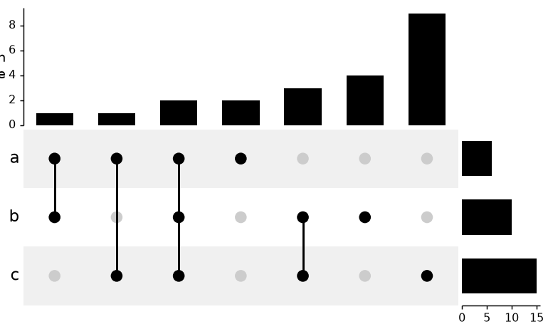
Point size, line width, and active combination colors are controlled
by pt_size, lwd, and comb_col.
Since ch.comb_degree(m) returns integer degrees
(1, 2, 3), map them cleanly to
colors:
pal = {1: "red", 2: "blue", 3: "black"}
ch.draw(
ch.UpSet(
m,
pt_size=ch.unit(5, "mm"),
lwd=3,
comb_col=[pal[int(d)] for d in ch.comb_degree(m)],
)
)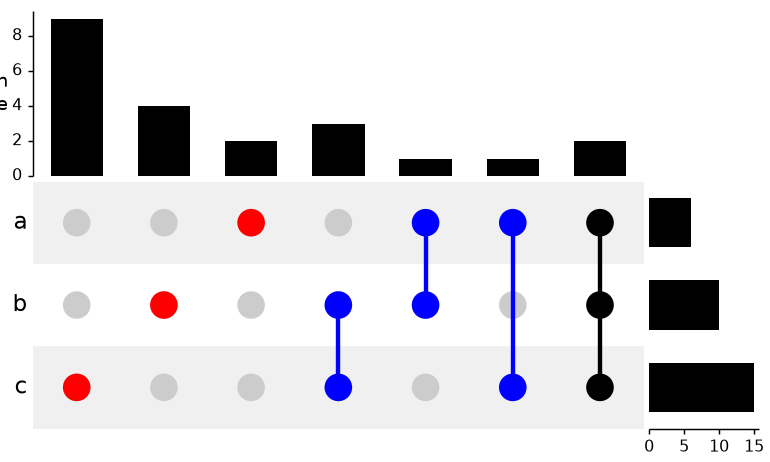
Background row bands and inactive dot colors are controlled by
bg_col (single color or 2-element alternating list) and
bg_pt_col:
ch.UpSet(m, comb_col="#0000FF", bg_col="#F0F0FF", bg_pt_col="#CCCCFF")
ch.UpSet(m, comb_col="#0000FF", bg_col=["#F0F0FF", "#FFF0F0"], bg_pt_col="#CCCCFF")
Transposing with ch.t(m) rotates the layout so sets
appear as columns and combination sets appear as rows:
ch.draw(ch.UpSet(ch.t(m)))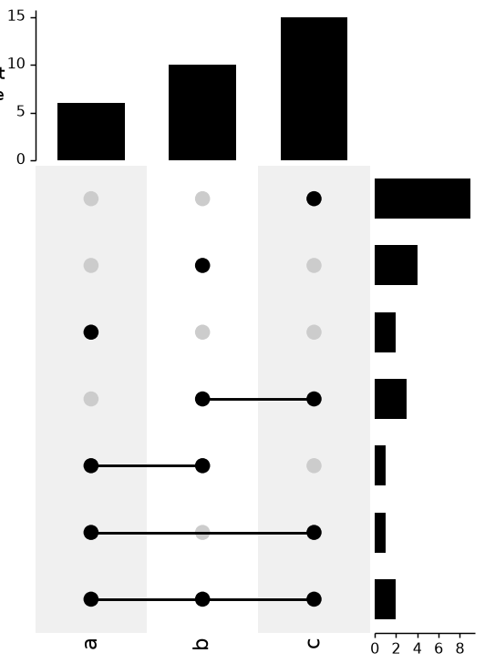
Subsetted combination matrices can be plotted directly:
ch.UpSet(m[:, ch.comb_size(m) >= 4], column_title="comb_size(m) >= 4")
ch.UpSet(m[:, ch.comb_degree(m) == 2], column_title="comb_degree(m) == 2")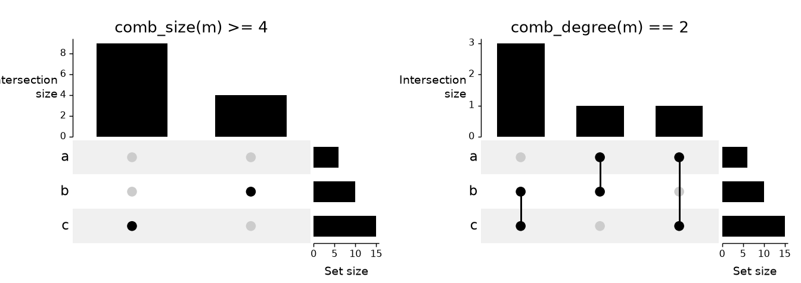
Comparing "distinct", "intersect", and
"union" modes on the same three sets highlights how
intersection sizes change across modes:
m1 = ch.make_comb_mat(lt)
m2 = ch.make_comb_mat(lt, mode="intersect")
m3 = ch.make_comb_mat(lt, mode="union")
When a universal_set is given, an additional combination
column with all-grey dots represents elements absent from all sets:
m2 = ch.make_comb_mat(lt, universal_set=letters)
ch.draw(ch.UpSet(m2))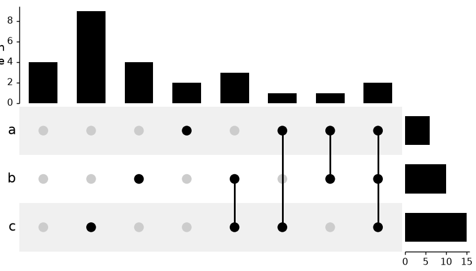
Or pass complement_size directly:
m2 = ch.make_comb_mat(lt, complement_size=10)
ch.draw(ch.UpSet(m2))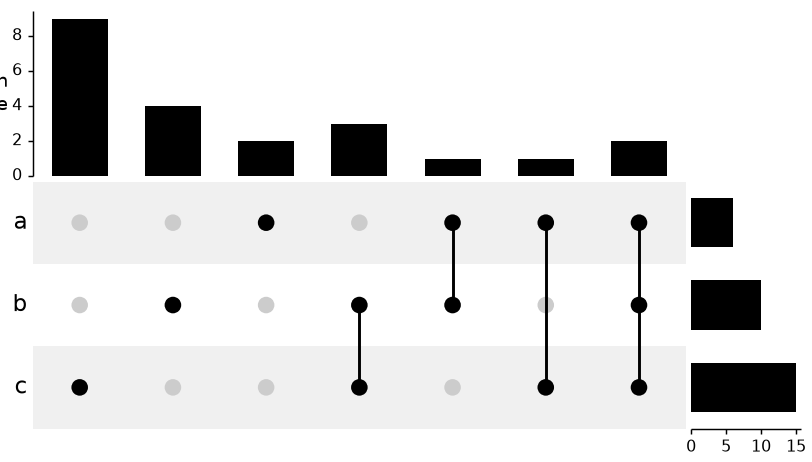
When universal_set is smaller than the union of the
input sets, only elements inside universal_set are
counted:
m2 = ch.make_comb_mat(lt, universal_set=letters[:10])
ch.draw(ch.UpSet(m2))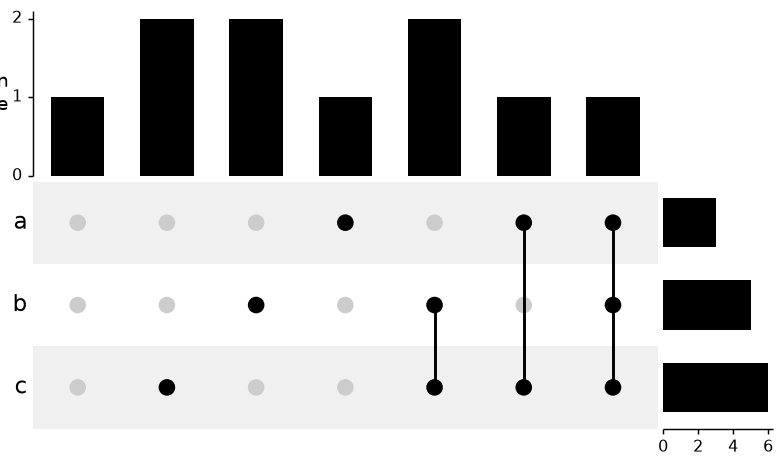
If a binary matrix already contains all-zero complement rows that you prefer to hide, filter out zero-degree combinations before plotting:
x = ch.list_to_matrix(lt, universal_set=letters)
m2 = ch.make_comb_mat(x)
m2 = m2[:, ch.comb_degree(m2) > 0]
ch.draw(ch.UpSet(m2))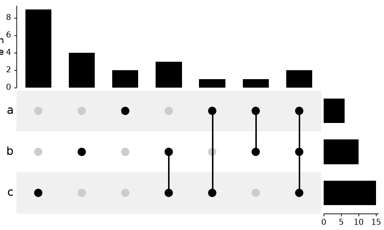
8.6 UpSet plots as heatmaps#
Internally, ch.UpSet() constructs a Heatmap
object whose body uses a custom layer_fun for dots and
segments, paired with anno_barplot() tracks on the top and
right. The helper functions ch.upset_top_annotation(),
ch.upset_right_annotation(), and
ch.upset_left_annotation() expose
anno_barplot() parameters directly.
For example, setting bar border colors by combination degree:
ch.draw(
ch.UpSet(
m,
top_annotation=ch.upset_top_annotation(
m, gp=ch.gpar(col=ch.comb_degree(m), fill="white")
),
)
)
Controlling ylim, bar_width, and
axis_param on the top barplot:
ch.draw(
ch.UpSet(
m,
top_annotation=ch.upset_top_annotation(
m,
ylim=(0, 15),
bar_width=1.0,
axis_param={
"side": "right",
"at": [0, 5, 10, 15],
"labels": ["zero", "five", "ten", "fifteen"],
},
),
)
)
Adjusting the annotation name rotation and side:
ch.draw(
ch.UpSet(
m,
top_annotation=ch.upset_top_annotation(
m,
annotation_name_rot=90,
annotation_name_side="right",
axis_param={"side": "right"},
),
)
)
Similarly, customize upset_right_annotation():
ch.draw(
ch.UpSet(
m,
right_annotation=ch.upset_right_annotation(
m,
ylim=(0, 30),
gp=ch.gpar(fill="green"),
annotation_name_side="top",
axis_param={"side": "top"},
),
)
)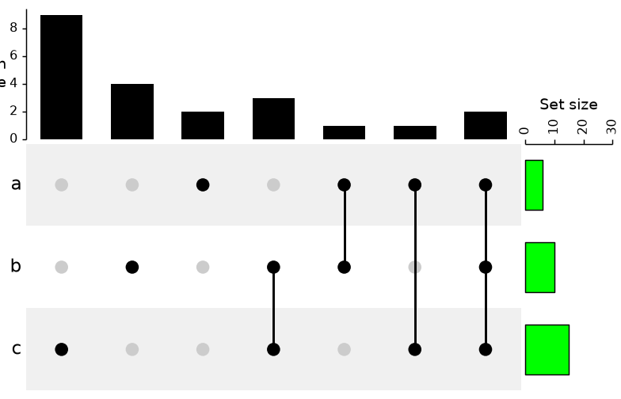
To stack multiple annotations on top or on the right, build a
ch.HeatmapAnnotation or ch.rowAnnotation
explicitly:
ch.draw(
ch.UpSet(
m,
top_annotation=ch.HeatmapAnnotation(
degree=[str(int(d)) for d in ch.comb_degree(m)],
**{
"Intersection\nsize": ch.anno_barplot(
ch.comb_size(m),
border=False,
gp=ch.gpar(fill="black"),
height=ch.unit(2, "cm"),
)
},
annotation_name_side="left",
annotation_name_rot=0,
),
)
)
And on the right:
ch.draw(
ch.UpSet(
m,
right_annotation=ch.rowAnnotation(
**{
"Set size": ch.anno_barplot(
ch.set_size(m),
border=False,
gp=ch.gpar(fill="black"),
width=ch.unit(2, "cm"),
)
},
group=["group1", "group1", "group2"],
),
)
)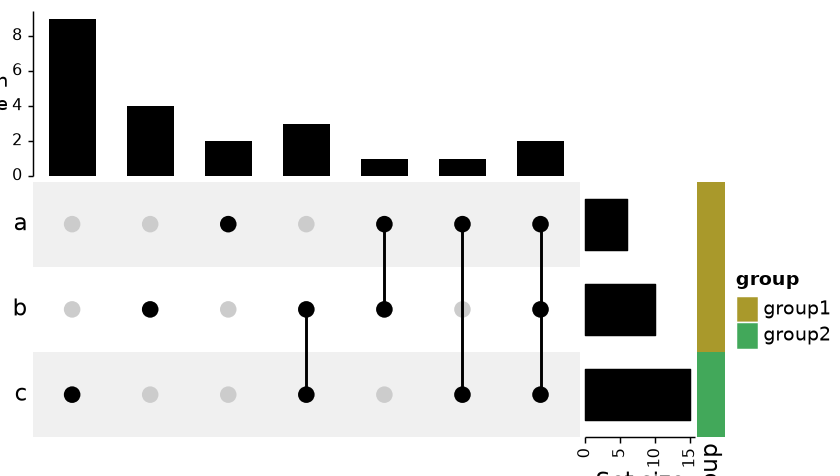
Move the set-size barplot to the left side with
ch.upset_left_annotation() (setting
right_annotation=None):
ch.draw(
ch.UpSet(
m,
left_annotation=ch.upset_left_annotation(m),
right_annotation=None,
)
)
Display counts directly on the bars with
add_numbers=True:
ch.draw(
ch.UpSet(
m,
top_annotation=ch.upset_top_annotation(m, add_numbers=True),
right_annotation=ch.upset_right_annotation(m, add_numbers=True),
)
)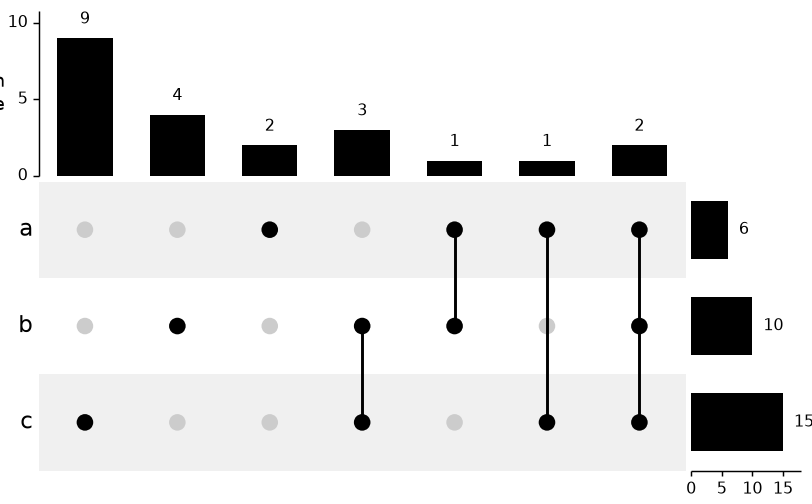
Because ch.UpSet() returns a standard
Heatmap instance, it can be concatenated horizontally
(+) or vertically (%v% or /) with
any heatmap or annotation (see A List
of Heatmaps):
ht = ch.UpSet(m)
ch.draw(
ht
+ ch.Heatmap(np.arange(1, 4), name="foo", width=ch.unit(5, "mm"))
+ ch.rowAnnotation(bar=ch.anno_points(np.arange(1, 4)))
)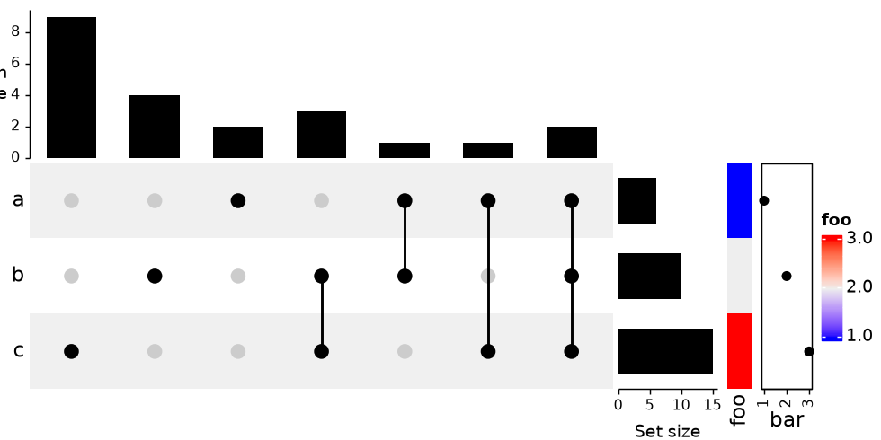
Vertical concatenation with %v% (note
from complexheatmap import v):
nc = m.ncol
ch.draw(
ht
% v
% ch.Heatmap(
np.arange(1, nc + 1).reshape(1, -1),
name="foo",
row_names_side="left",
height=ch.unit(5, "mm"),
)
% v
% ch.HeatmapAnnotation(
bar=ch.anno_points(np.arange(1, nc + 1)),
annotation_name_side="left",
)
)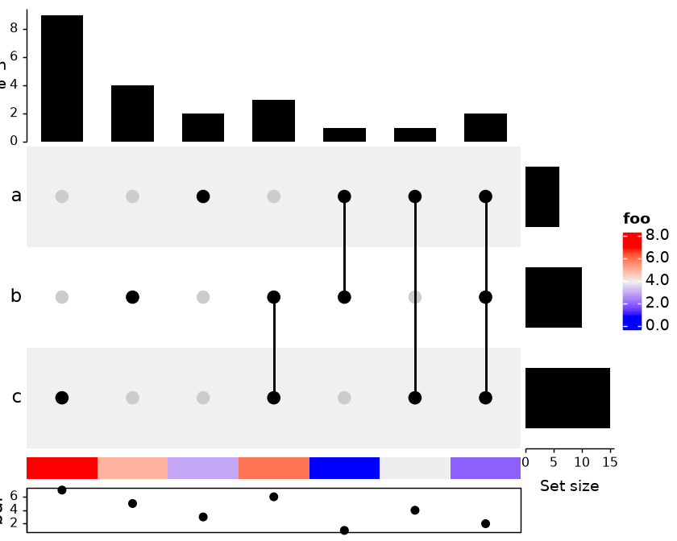
When comparing multiple CombMat objects across modes in
a single stacked HeatmapList, call
ch.normalize_comb_mat(m1, m2, m3) first so all three share
identical set and combination indices:
m1n, m2n, m3n = ch.normalize_comb_mat(m1, m2, m3)
ch.draw(
ch.UpSet(m1n, row_title="distinct mode")
% v
% ch.UpSet(m2n, row_title="intersect mode")
% v
% ch.UpSet(m3n, row_title="union mode")
)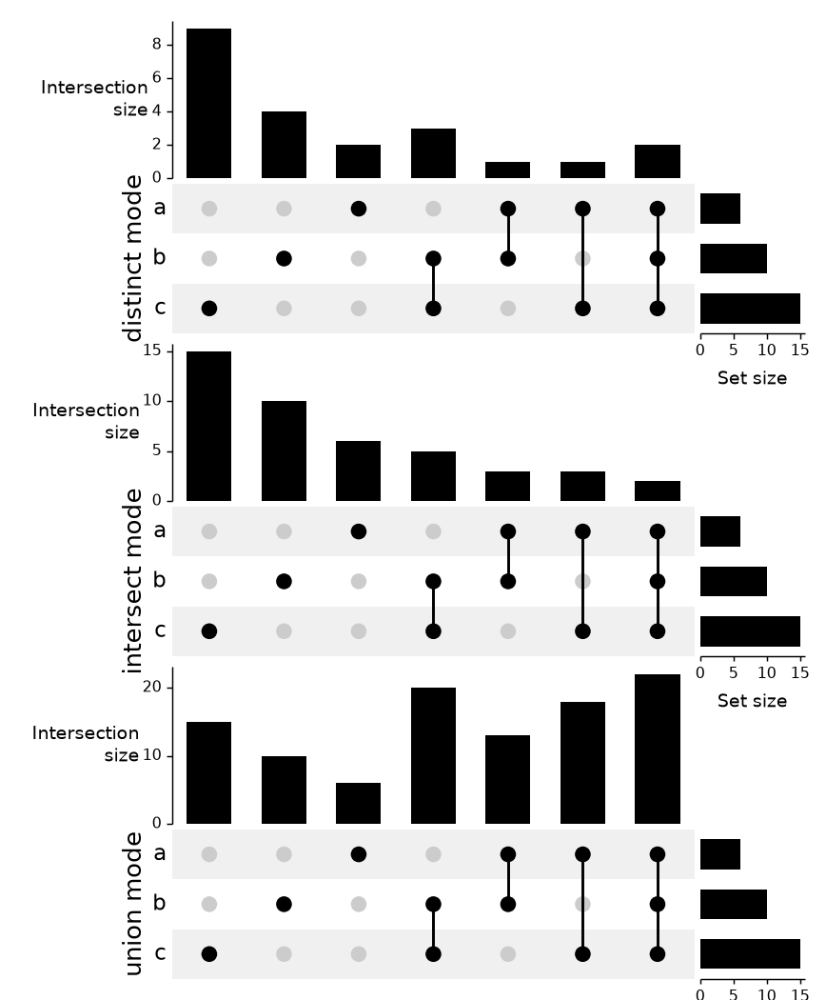
Or transpose all three and concatenate horizontally:
ch.draw(
ch.UpSet(ch.t(m1n), column_title="distinct mode")
+ ch.UpSet(ch.t(m2n), column_title="intersect mode")
+ ch.UpSet(ch.t(m3n), column_title="union mode")
)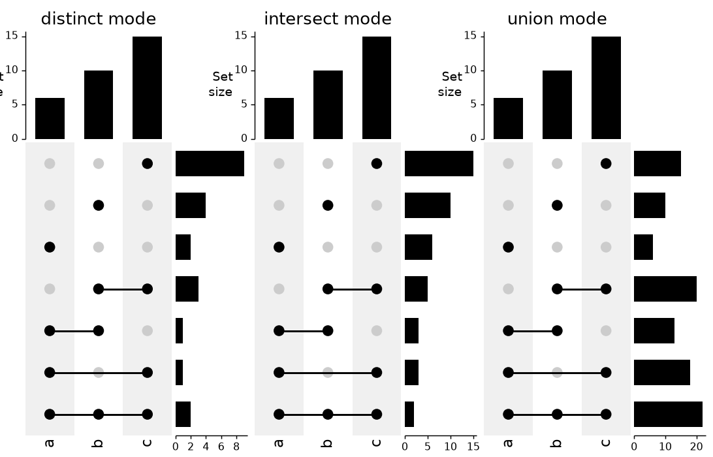
Rather than repeating the dot matrix three times, align the
combination sizes of "intersect" and "union"
onto ch.comb_name(m1) and display all three barplots
together in a single HeatmapAnnotation:
codes1 = ch.comb_name(m1)
cs_dist = ch.comb_size(m1)
cs_int = np.array([dict(zip(ch.comb_name(m2), ch.comb_size(m2))).get(c, 0.0) for c in codes1])
cs_uni = np.array([dict(zip(ch.comb_name(m3), ch.comb_size(m3))).get(c, 0.0) for c in codes1])
top_ha = ch.HeatmapAnnotation(
distinct=ch.anno_barplot(cs_dist, gp=ch.gpar(fill="black"), height=ch.unit(1.8, "cm")),
intersect=ch.anno_barplot(cs_int, gp=ch.gpar(fill="black"), height=ch.unit(1.8, "cm")),
union=ch.anno_barplot(cs_uni, gp=ch.gpar(fill="black"), height=ch.unit(1.8, "cm")),
gap=ch.unit(2, "mm"),
annotation_name_side="left",
annotation_name_rot=0,
)
ch.draw(ch.UpSet(m1, top_annotation=top_ha))
And similarly on the right when transposed:
right_ha = ch.rowAnnotation(
distinct=ch.anno_barplot(cs_dist, gp=ch.gpar(fill="black"), width=ch.unit(1.8, "cm")),
intersect=ch.anno_barplot(cs_int, gp=ch.gpar(fill="black"), width=ch.unit(1.8, "cm")),
union=ch.anno_barplot(cs_uni, gp=ch.gpar(fill="black"), width=ch.unit(1.8, "cm")),
gap=ch.unit(2, "mm"),
annotation_name_side="bottom",
)
ch.draw(ch.UpSet(ch.t(m1), right_annotation=right_ha))
8.7 Example with the movies dataset#
Next we reproduce the classic UpSetR movies
workflow using a deterministic synthetic movies
DataFrame (3,883 movies with ReleaseDate,
binary genre columns Action, Romance,
Horror, Children, SciFi,
Documentary, Comedy, Drama, plus
AvgRating and Watches). Because
ch.make_comb_mat() converts every column of a
DataFrame into binary membership (!= 0), pass
the binary genre columns explicitly
(movies[all_genres]):
all_genres = ["Action", "Romance", "Horror", "Children", "SciFi", "Documentary", "Comedy", "Drama"]
m = ch.make_comb_mat(movies[all_genres], top_n_sets=6)
m = m[:, ch.comb_degree(m) > 0]
ch.draw(ch.UpSet(m))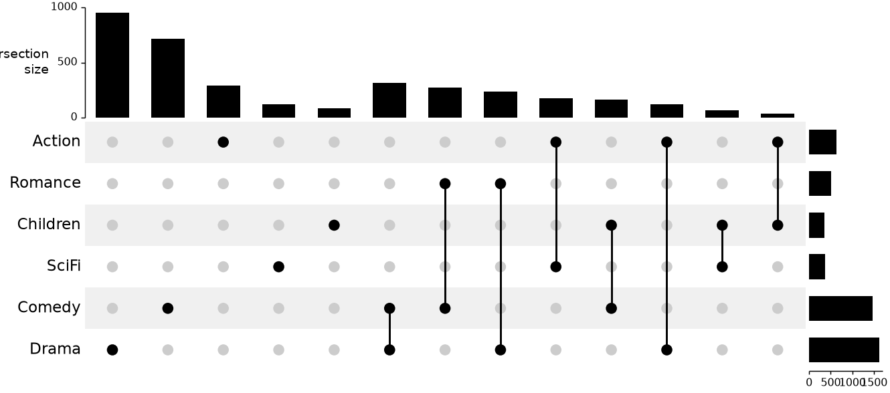
To mirror the classic UpSetR layout—with genre bars
extending leftward via negative values (baseline=0.0),
custom positive axis labels, centered genre names via
anno_text(), and angled counts above the intersection bars
via decorate_annotation() (see Heatmap Decoration)—build the top and
left annotations explicitly:
ss = ch.set_size(m)
cs = ch.comb_size(m)
ht = ch.UpSet(
m,
set_order=np.argsort(ss).tolist(),
comb_order=sorted(range(m.ncol), key=lambda j: (int(ch.comb_degree(m)[j]), -float(cs[j]))),
top_annotation=ch.HeatmapAnnotation(
**{
"Genre Intersections": ch.anno_barplot(
cs,
ylim=(0, float(cs.max()) * 1.15),
border=False,
gp=ch.gpar(fill="black"),
height=ch.unit(4.0, "cm"),
)
},
annotation_name_side="left",
annotation_name_rot=90,
),
left_annotation=ch.rowAnnotation(
**{
"Movies Per Genre": ch.anno_barplot(
-ss,
baseline=0.0,
axis_param={
"at": [0, -500, -1000, -1500],
"labels": ["0", "500", "1000", "1500"],
"labels_rot": 0,
},
border=False,
gp=ch.gpar(fill="black"),
width=ch.unit(4.0, "cm"),
),
"set_name": ch.anno_text(
ch.set_name(m),
location=0.5,
just="center",
width=ch.max_text_width(ch.set_name(m)) + ch.unit(4, "mm"),
),
},
annotation_name_side="top",
),
right_annotation=None,
show_row_names=False,
)
res = ch.draw(ht, padding=ch.unit([6, 6, 8, 4], "mm"))
od = ch.column_order(res)
with ch.decorate_annotation("Genre Intersections"):
ch.grid_text(
[str(int(cs[j])) for j in od],
x=np.arange(1, len(cs) + 1, dtype=float),
y=ch.unit(cs[od], "native") + ch.unit(2, "pt"),
default_units="native",
just=["left", "bottom"],
gp=ch.gpar(fontsize=7, col="#404040"),
rot=45,
)
Next, stratify movies into five groups by AvgRating,
normalize the resulting combination matrices with
ch.normalize_comb_mat() so every subgroup shares identical
sets and combination columns, and stack the five UpSet plots vertically
with shared axis limits:
genre = ["Action", "Romance", "Horror", "Children", "SciFi", "Documentary"]
rating_cat = pd.cut(movies["AvgRating"], bins=[0, 1, 2, 3, 4, 5])
m_list = []
rating_labels = []
for cat in rating_cat.cat.categories:
mc = ch.make_comb_mat(movies.loc[rating_cat == cat, genre])
m_list.append(mc[:, ch.comb_degree(mc) > 0])
rating_labels.append(str(cat))
m_list = ch.normalize_comb_mat(m_list)
tot_cs = np.sum([ch.comb_size(mk) for mk in m_list], axis=0)
shared_comb_ord = sorted(
range(m_list[0].ncol),
key=lambda j: (int(ch.comb_degree(m_list[0])[j]), -float(tot_cs[j])),
)
max_set_size = float(max(ch.set_size(mk).max() for mk in m_list))
max_comb_size = float(max(ch.comb_size(mk).max() for mk in m_list))
ht_list = None
for lbl, mk in zip(rating_labels, m_list):
u = ch.UpSet(
mk,
row_title=f"rating in {lbl}",
set_order=list(range(mk.nrow)),
comb_order=shared_comb_ord,
top_annotation=ch.upset_top_annotation(mk, ylim=(0, max_comb_size), height=ch.unit(1.8, "cm")),
right_annotation=ch.upset_right_annotation(mk, ylim=(0, max_set_size)),
)
ht_list = ch.add_heatmap(ht_list, u, direction="vertical")
ch.draw(ht_list)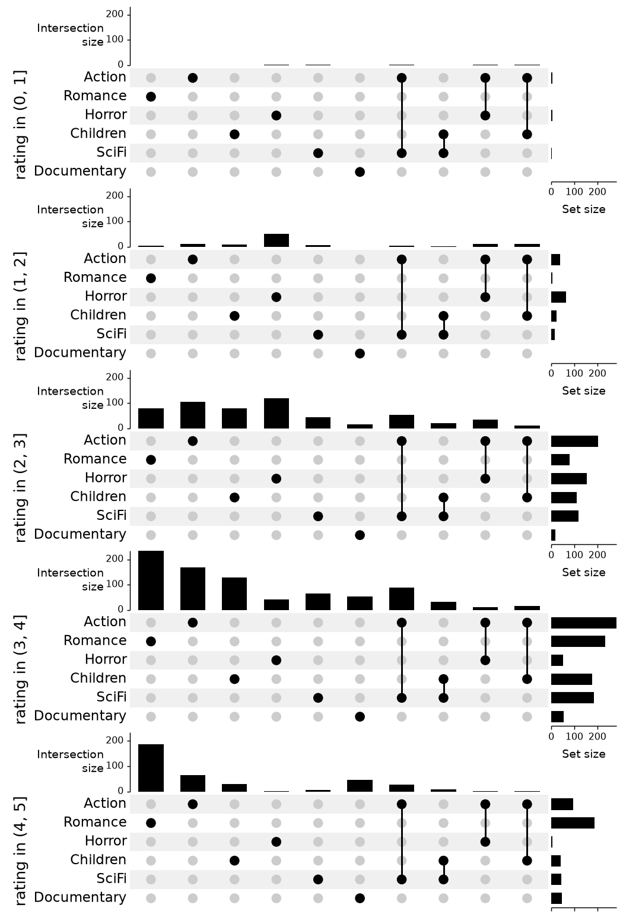
Replacing raw counts with relative fractions within each rating bin
(excluding the sparse (0, 1] bin) reveals genre rating
trends even more clearly—horror films skew toward lower ratings while
documentaries and romances skew higher:
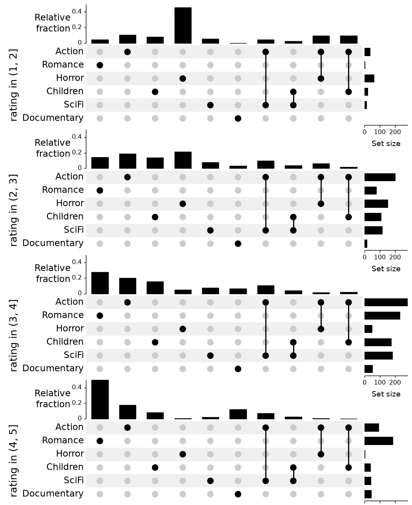
Stratifying by release decade (1910s through
2000s) and arranging five decades per column via
ch.viewport() shows the surge of 1990s releases in both raw
counts and relative proportions:

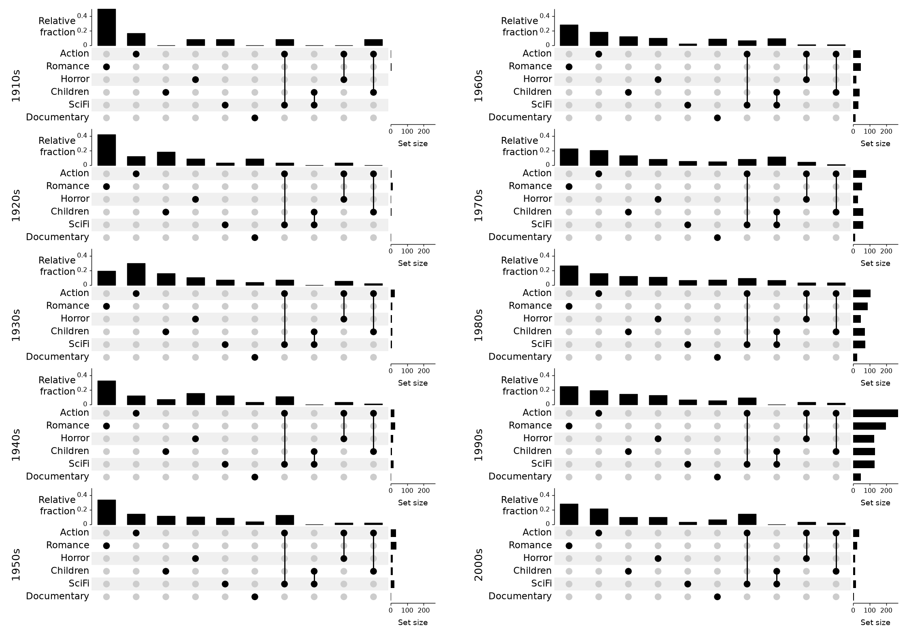
Finally, extract the movie row indices in each combination set via
ch.extract_comb(), look up ReleaseDate,
AvgRating, and Watches, and attach
ch.anno_boxplot() tracks to a transposed UpSet plot:
m_sub = ch.make_comb_mat(movies[genre])
m_sub = m_sub[:, ch.comb_degree(m_sub) > 0]
comb_elements = [ch.extract_comb(m_sub, nm) for nm in ch.comb_name(m_sub)]
years_list = [movies.loc[ind, "ReleaseDate"].to_numpy() for ind in comb_elements]
rating_list = [movies.loc[ind, "AvgRating"].to_numpy() for ind in comb_elements]
watches_list = [movies.loc[ind, "Watches"].to_numpy() for ind in comb_elements]
ch.draw(
ch.UpSet(
ch.t(m_sub),
right_annotation=ch.upset_right_annotation(
ch.t(m_sub), annotation_name_side="top", axis_param={"side": "top"}
),
)
+ ch.rowAnnotation(
years=ch.anno_boxplot(years_list, width=ch.unit(2.2, "cm")),
rating=ch.anno_boxplot(rating_list, width=ch.unit(2.2, "cm")),
watches=ch.anno_boxplot(watches_list, width=ch.unit(2.2, "cm")),
gap=ch.unit(3, "mm"),
annotation_name_offset=ch.unit(8, "mm"),
)
)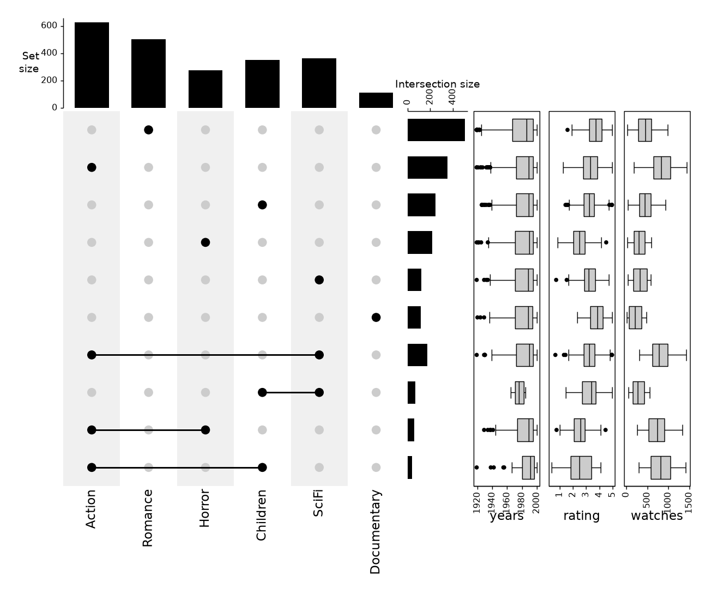
Notice how SciFi + Children films skew toward earlier
release years while Action + Children films exhibit lower
median ratings.
8.8 Example with the genomic regions#
For genomic interval sets, construct ch.GRanges objects
representing ChIP-seq peaks across six samples (ESC,
ES-deriv1, ES-deriv2, Brain,
Muscle, Heart). When
ch.make_comb_mat() receives a dictionary of
GRanges objects, sizes represent total base pairs
covered. Here we keep combination sets covering more than 500
kb:
m = ch.make_comb_mat(peak_list)
m = m[:, ch.comb_size(m) > 500_000]
ch.draw(ch.UpSet(m))
Format the barplot axes in megabases using
axis_param:
ch.draw(
ch.UpSet(
m,
top_annotation=ch.upset_top_annotation(
m,
axis_param={"at": [0, 5_000_000, 10_000_000, 15_000_000], "labels": ["0Mb", "5Mb", "10Mb", "15Mb"]},
height=ch.unit(3.8, "cm"),
),
right_annotation=ch.upset_right_annotation(
m,
axis_param={"at": [0, 10_000_000, 20_000_000, 30_000_000], "labels": ["0Mb", "10Mb", "20Mb", "30Mb"], "labels_rot": 0},
width=ch.unit(3.8, "cm"),
),
)
)
Finally, use ch.extract_comb(m, nm) to retrieve the
GRanges intervals for each combination set and summarize
genomic metadata—such as distance to the nearest TSS
(anno_boxplot) and mean methylation
(mean_meth)—alongside sample subgroup colors:
subgroup = {
"ESC": "group1",
"ES-deriv1": "group1",
"ES-deriv2": "group1",
"Brain": "group2",
"Muscle": "group2",
"Heart": "group2",
}
comb_sets = [ch.extract_comb(m, nm) for nm in ch.comb_name(m)]
# Suppose each GRanges in comb_sets carries dist_to_tss and mean_meth arrays
ch.draw(
ch.UpSet(
m,
top_annotation=ch.upset_top_annotation(
m,
axis_param={"at": [0, 5_000_000, 10_000_000, 15_000_000], "labels": ["0Mb", "5Mb", "10Mb", "15Mb"]},
height=ch.unit(3.8, "cm"),
),
right_annotation=ch.upset_right_annotation(
m,
axis_param={"at": [0, 10_000_000, 20_000_000, 30_000_000], "labels": ["0Mb", "10Mb", "20Mb", "30Mb"], "labels_rot": 0},
width=ch.unit(3.8, "cm"),
),
left_annotation=ch.rowAnnotation(
group=[subgroup[s] for s in ch.set_name(m)],
col={"group": {"group1": "#1B9E77", "group2": "#D95F02"}},
show_annotation_name=False,
),
bottom_annotation=ch.HeatmapAnnotation(
dist_to_tss=ch.anno_boxplot(dist_to_tss, outline=False, height=ch.unit(1.8, "cm")),
mean_meth=mean_meth,
annotation_name_side="left",
annotation_name_offset=ch.unit(9, "mm"),
),
)
)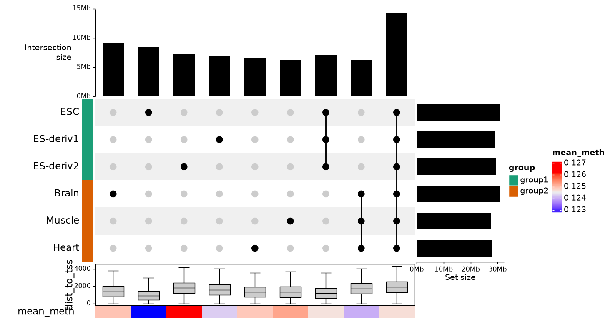